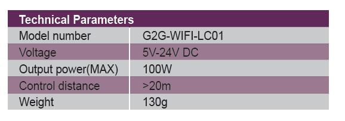
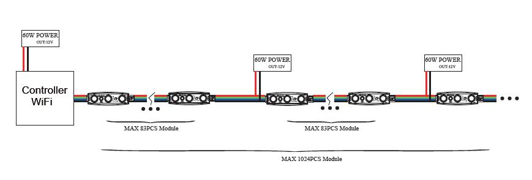

dimmer_controller<div class="product-details margit-top110">
	<div class="container">
		<div>
			
		</div>
		<div class="row bottom-line">
			<div class="col-xs-12 col-sm-7 col-md-7">
				<p>
					Endless possibilities, all from the palm of your hand.<br>
					G2G's DIY Wifi can be used with the iPhoneTM, iPodTM, or iPadTM to control brightness, color and direction and to design a multitude of patterns and effects. Choose from hundreds of shades of colors. For use with 5V- 24V single color digi-ribbon LED modules.
				</p>
			</div>
			<div class="col-xs-12 col-sm-5 col-md-5">
				<a class="download_layout" download="" href="download_files/dimmer_controller.pdf">Download The Product Catalog</a>
			</div>
		</div>
		<div class="row product-features">
			<h3 class="specification">Controller Features</h3>
			<p>
				• Easy to use App, downloadable Free from the App StoreTM
				<br> •For use with the iPhoneTM, iPodTM and iPadTM IOS4.1 systems and up
				<br> •25 pre-set functions
				<br> •RJ-45 interface output
				<br> •Compatible chips: LPD 1109, SM16716, LPD6803, LPD8803, WS2801, TM1803, TM1809.

			</p>

		</div>
		<div class="row product-features">
			<h3 class="specification">Controller Specifications</h3>
			<div class="col-md-4 features">
				
			</div>
		</div>
		<h3 class="specification">Installation Diagram</h3>
		<div>
			
		</div>


	</div>
</div>